Les carrousels de valeur, en entier — et ce qu'ils nous apprennent
Deux panels
1) Le top tier du design (wellness, parsé sur Mobbin par Charles) : Headspace, Breeze, etc. → c'est le niveau premium qu'on vise. 2) Les grosses apps de notre corpus kids/audio : Epic, Reading Eggs, Vooks, Hooked, Pickatale. Je laisse de côté les petites apps (KiLi…). On commence par le top tier.
Le top tier du design d'onboarding (wellness, via Mobbin)
Les références à plus gros budget produit/design. C'est ici qu'on lit le vrai niveau premium.
Headspace
référence absolue · méditation2 slides. Restraint extrême : fond BLANC constant, grosse illustration plate signature en bas, titre gras aligné à gauche, sous-titre, points, un seul CTA bleu « Continue ». La couleur ne vit pas dans le fond (blanc partout) mais dans l'illustration (orange → jaune) : variation subtile, premium. La slide 2 injecte un chiffre concret (« +16% de bonheur en 10 jours, science-backed »). Leçon : le premium = le vide + un seul CTA + le concret par la stat.
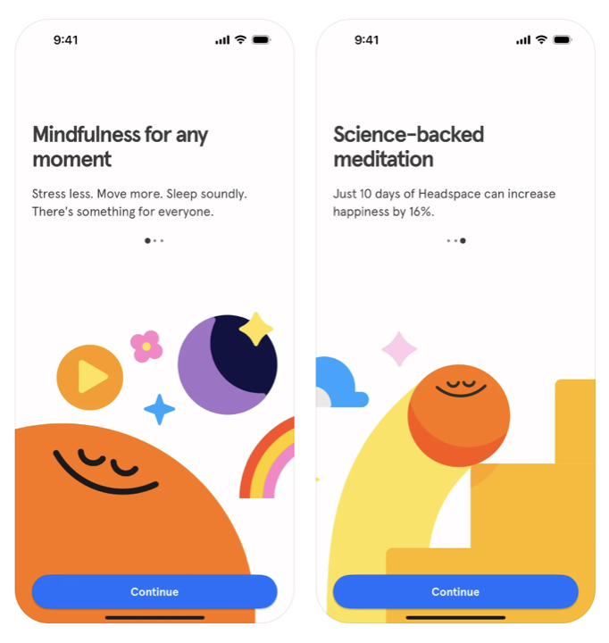
Breeze
humeur / journaling2 slides. Fond lavande constant, illustration dans une carte arrondie en haut, titre gras, sous-titre (ou checklist de features concrète), points COLORÉS, un CTA bleu. Structure et fond constants ; les points multicolores = touche premium-joyeuse. La permission notif est intégrée comme une slide du flow.

App de santé mentale
école « mockup produit »3 slides. Fond lavande constant, un mockup produit en haut (un test, des cartes de contenu, un curseur d'humeur : la feature en vrai), titre en BAS, points colorés, CTA « Next ». L'école « montrer le produit » (comme Vooks/Pickatale), en version premium. Très pertinent pour notre écran B (montrer le catalogue fermé / les features en vrai).

App de self-care · l'engagement
dispositif d'engagementCe n'est pas une slide de valeur, c'est un dispositif d'engagement : « Are you ready to invest in yourself? » → dessiner un checkmark → « I promise myself » + confettis. Le top tier ne fait pas que présenter, il fait s'engager l'utilisateur (effet de commitment). À garder pour le parcours (pas pour le carrousel).
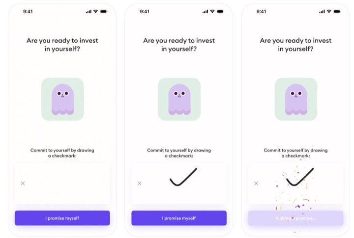
Les carrousels de notre corpus kids, en entier
Epic
US · app de lecture enfants majeureLa leçon clé sur ta question. Structure strictement identique sur les 3 slides (logo en haut, grand titre, sous-titre, illustration héros, mêmes liens de pied, points). MAIS la couleur de fond change à chaque slide (bleu → vert → rouge). C'est exactement la variation maîtrisée : on garde la structure, on rythme par la couleur.
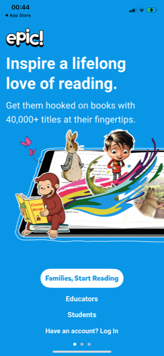
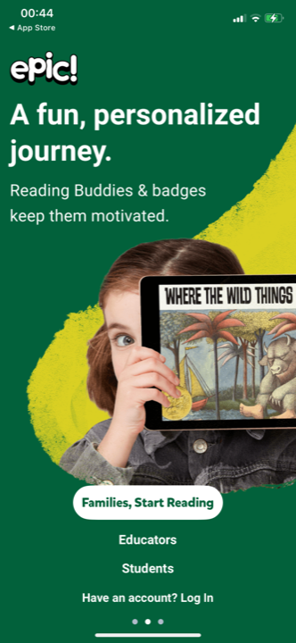

Reading Eggs
20M+ enfants · gros acteurStructure constante, couleur alternée. 7 slides, même structure (logo, bandeau-titre courbé, sous-titre, illustration, points, CTA), mais le bandeau-titre ALTERNE magenta / bleu d'une slide à l'autre (magenta, bleu, magenta, bleu…). La dernière (programmes) passe en magenta plein. Bémol : 7 slides, c'est long, et les sous-titres sont denses (paragraphe au lieu d'une ligne).
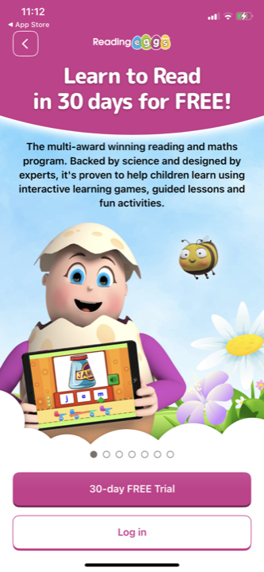
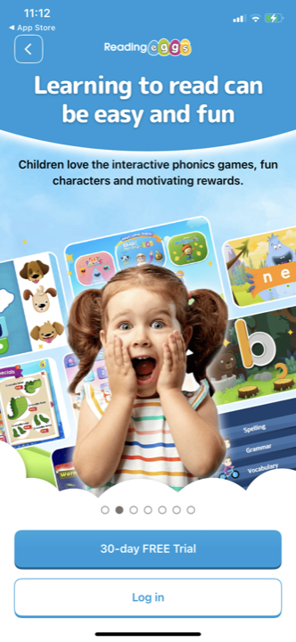

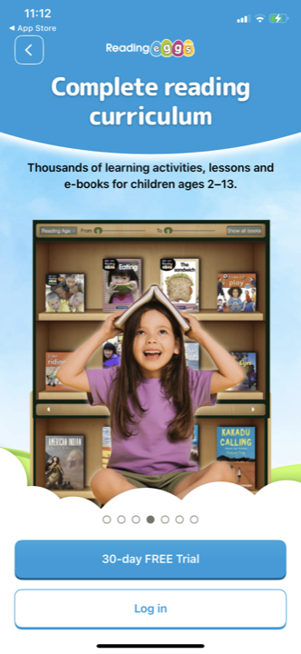
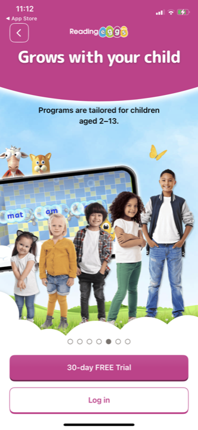
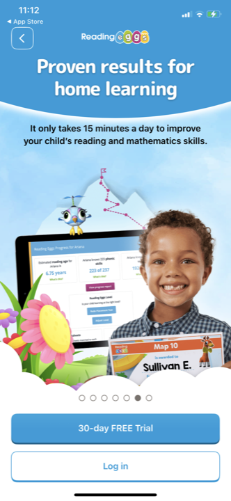
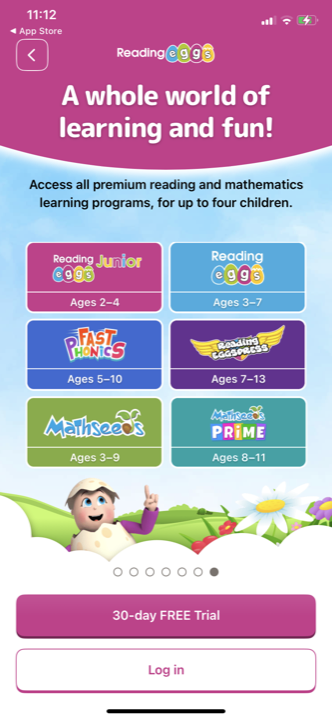
Vooks
US · livres animésLe modèle immersif. 4 slides, même structure (logo + Sign in, zone produit/illustration, titre + sous-titre en surimpression, points, CTA d'essai). Le fond glisse du sombre (slides 1-2) au clair (slides 3-4). À regarder pour nous : la slide « Audio-Only Mode » montre une feature avec un mockup produit, pas un picto.

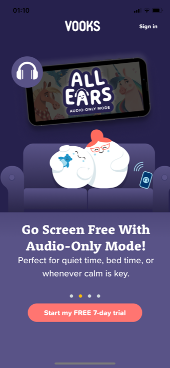
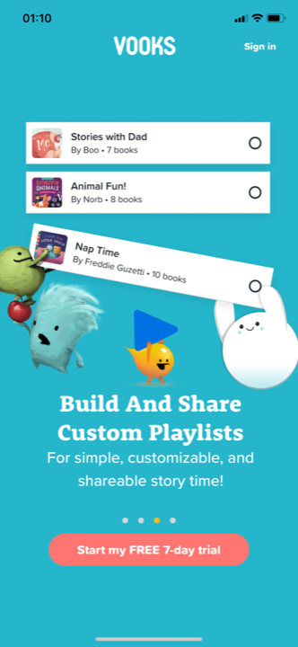

Hooked on Phonics
US · phonicsLe contre-exemple sur la couleur. 5 slides, structure identique (logo, un personnage centré, titre, sous-titre, points, double CTA), et surtout le MÊME fond bleu clair sur les 5. Hooked ne varie PAS la couleur, et c'est propre quand même. Preuve qu'un fond uniforme vaut un fond qui change : ce qui compte vraiment, c'est la structure constante. (Bémol : double CTA compte + login sur chaque slide.)
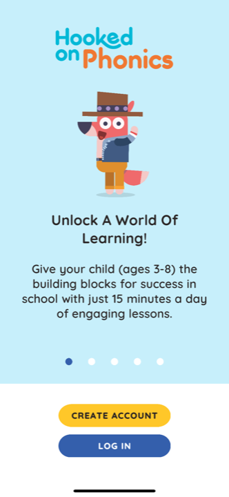
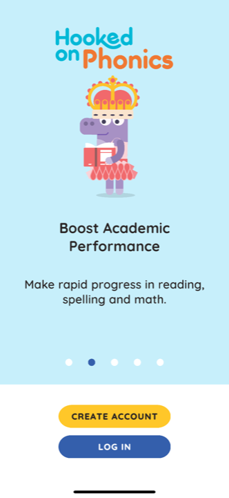

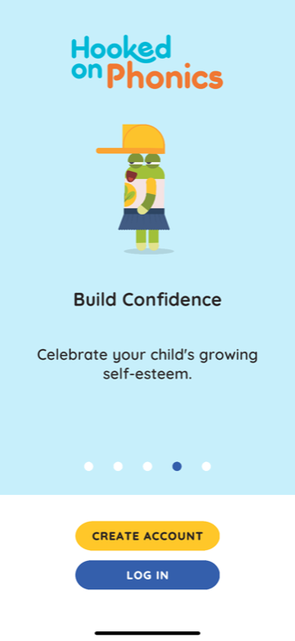
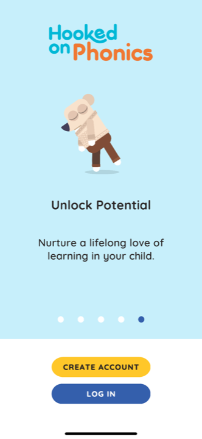
Pickatale
lecture enfants · mockups produitL'autre école de héros : le mockup produit. 5 slides, structure identique, et la plupart montrent un écran réel de l'app (la feature en vrai : création d'histoire, phonics, mes livres, quiz), pas une illustration. Le fond change à chaque slide (jaune, vert foncé, crème, vert, menthe). Comme Vooks : on montre le produit, on ne le décrit pas. Pertinent pour nos features concrètes (notre écran B). Bémol : les boutons de rôle (parent / éducateur) sur chaque slide, lourd.

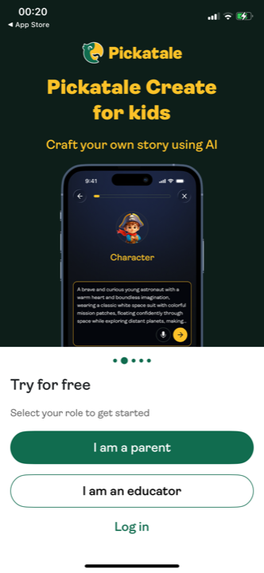
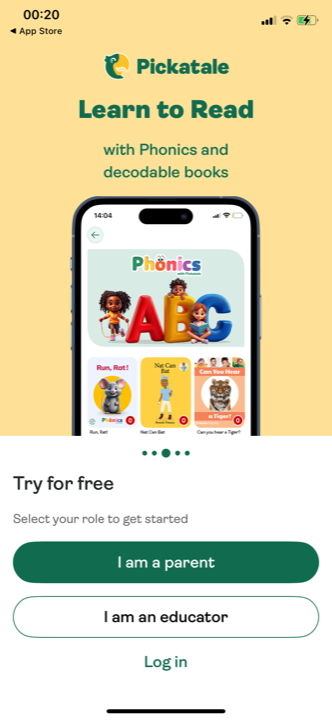
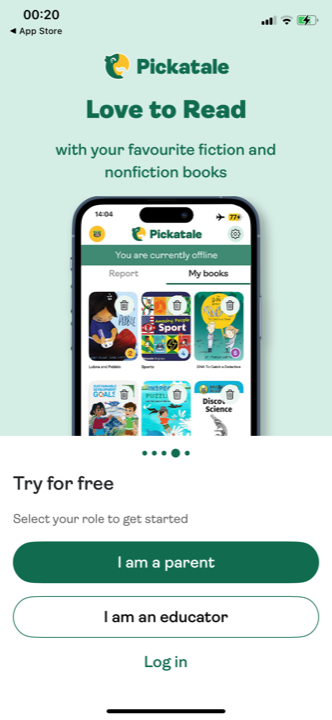

Cohérence ou variation entre les slides ? (la réponse, vue sur les séries entières)
La structure ne varie JAMAIS. La couleur, souvent — mais pas toujours.
- La composition / le squelette reste identique sur toutes les slides, sans exception (les 5 apps). Même barre haute, même zone héros, même position de titre, même rythme, mêmes points + CTA. C'est la seule vraie règle, et c'est ce qui fait « une série ».
- La couleur varie souvent, mais pas toujours. 4 apps sur 5 la font varier pour le rythme (Epic bleu→vert→rouge, Reading Eggs magenta/bleu alterné, Vooks sombre→clair, Pickatale jaune/vert/crème). MAIS Hooked garde le même bleu clair sur ses 5 slides, et c'est tout aussi propre. Donc varier la couleur est une option efficace, pas une obligation.
- Le top tier va vers le fond CONSTANT. Headspace (blanc), Breeze et l'app de santé mentale (lavande) gardent le même fond et font vivre la couleur dans l'illustration, pas dans le fond. C'est plus premium que de swapper tout le fond (Epic). Idem côté CTA : un seul (« Continue »), jamais le double bouton.
- Deux écoles de héros : l'illustration centrée (Headspace, Epic, Hooked) ou le mockup produit qui montre la feature en vrai (app santé mentale, Vooks, Pickatale). La 2e est la plus pertinente pour nos écrans concrets.
- On ne change jamais la composition d'une slide à l'autre. Changer la mise en page entre slides, c'est ce qui ferait « 3 écrans différents » au lieu d'une série. Aucune ne le fait.
La best practice qui en ressort
Le point clé pour nous : propre ≠ concret
Le trade-off qu'on a tranché
Ces carrousels sont propres parce qu'ils sont minimalistes et souvent abstraits (« Inspire a love of reading », « Learning can be easy and fun »). Toi tu as refusé l'abstrait : tu veux du concret (catalogue fermé montré, profils Léa/Tom). Le concret demande plus d'éléments → nos slides B et C sont forcément plus riches.
Donc notre enjeu n'est pas de copier leur minimalisme, c'est de garder nos slides concrètes dans un squelette figé et avec du vide : un héros par slide, structure identique sur les 3, rythme par la couleur si besoin.
La recommandation pour notre carrousel
Viser le niveau Headspace : figer le squelette, alléger, et un seul CTA
- Verrouiller la structure sur les 3 slides : même position de titre, même zone héros, même densité. Nos rendus varient trop (titre en bas / milieu / haut).
- Fond crème CONSTANT, couleur dans l'illustration (façon Headspace / Breeze), plutôt que swapper tout le fond. Plus premium. Si on veut rythmer, on le fait dans les couvertures/illustrations.
- Un seul CTA par slide (on l'a : Suivant / Commencer). Pas de double bouton.
- Alléger B (un seul héros : la carte catalogue fermé, façon « mockup produit » comme l'app de santé mentale) et C (moins de cartes), pour une densité comparable à A.
- Injecter du concret façon Headspace où c'est possible (une donnée nette plutôt qu'une promesse vague) ; points de progression colorés (touche premium).
- 3 slides, pas plus. On est bien (A, B, C).
Pour aller plus loin
On a le top tier wellness ; on peut élargir
Tu as parsé 4 wellness sur Mobbin (Headspace, Breeze + 2), intégrés en haut : ça nous donne le niveau premium visé. Si utile, on peut ramener d'autres familles du top tier (Duolingo pour la gamification, Calm pour le minimalisme sombre, une fintech type Revolut pour la rigueur), quand l'accès Drive/Mobbin sera de nouveau stable de mon côté.
Carrousels montrés en entier, captures réelles du benchmark (hors famille F1b). Mission conseil Kidsono, 2026-06-16.